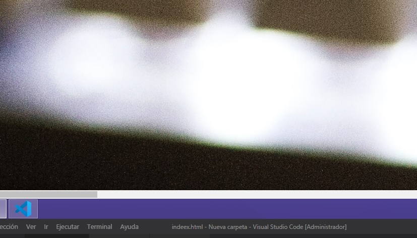
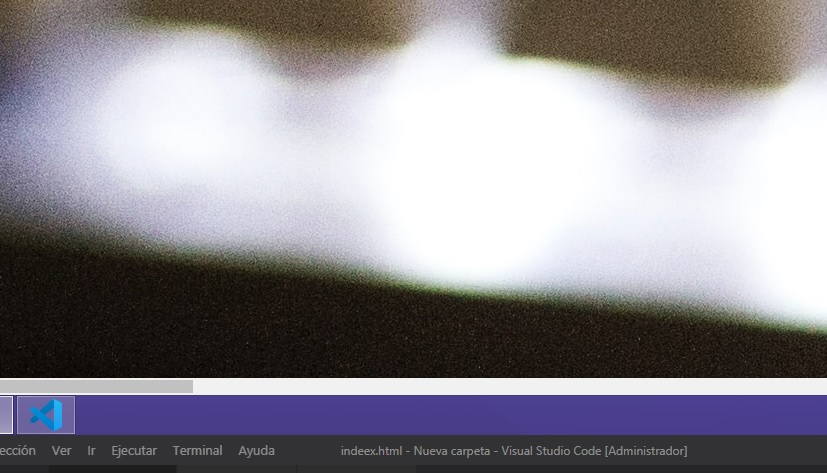
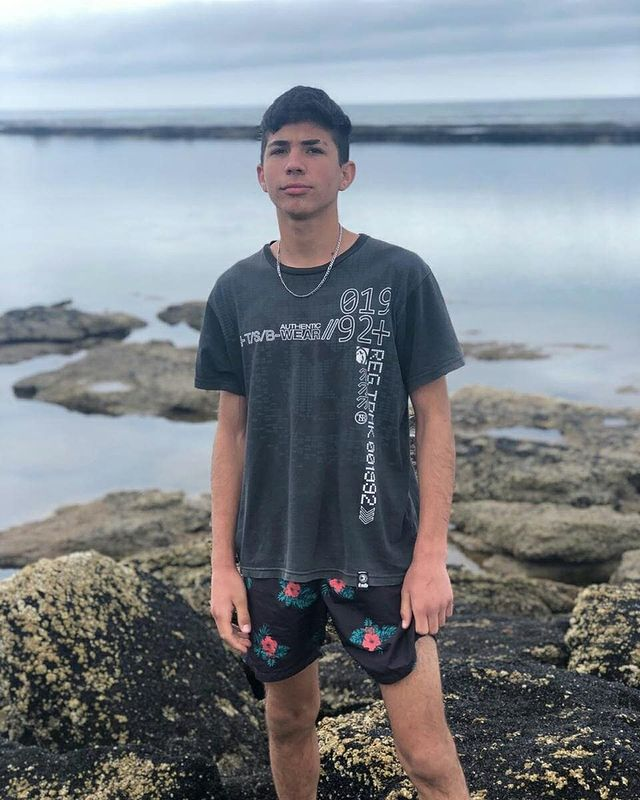
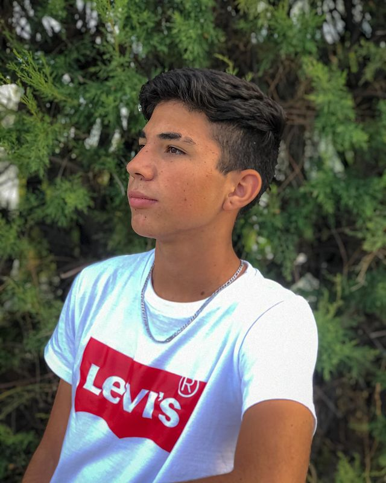

Comunidad

1¿como entro a la comunidad?
para poder formar parte de nuestra comunidad tendras que tener cumplido una series de pasos
2¿una ves que estoy en la comunidad que tengo que hacer?
una ves que estes en la comunidad te vamos a obsequiar emoticones y baners personalizados para que pongas en tu stream, tambien iran acompañados de unas series de comandos de la comunidad.
3¿que pasas si no pongo todo los que ustedes me obsequiaron?
bien mira por un lado no es necesario poner todo lo que te vayamos a dar, vos tenes la elecion libre de poner lo que quieras en tu stream pero si o si tiene que aver un baner de la comunidad en tu stream, porque si no lo hay seria avertido por 1 ves y a la 3 seria echado de nuestra comunidad.
4¿que beneficio tiene ser parte de la comunidad?
si formas parte de la comunidad "los de la miseria" tendrias muchos beneficios por ejemplo:
Twitch
 

Redes sociales

@artuking10
